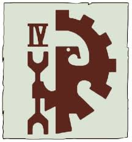

A Little Bit About Me
-
✓
I was born in Southern California, but I claim Arizona as my home, since I moved there in middle school.
-
✓
I am a stereotypical nerd in most ways you can think of:
- • I love role-playing and strategy games, regardless of format: Board Games, Video Games, or Pen and paper like Dungeons and Dragons.
- • I enjoy science fiction and fantasy, also regardless of format: TV shows, movies, graphic novels and books.
- • I have a dual major in computer science and math, and my job is overseeing a large software project.
-
✓
However, there are a couple of ways I differ from the stereotype:
- I love the outdoors, specifically: hiking, camping, and skiing (both water and snow).
- I also like to cook and I am the designated cook for our household.
The Story Behind My Avatar Image: Griphonne IV

I often use the image above as my avatar on various websites and forums. It is the symbol of Griphonne IV, a planet in the Warhammer 40K universe.
It was one of the most powerful forgeworlds of the Imperium of Man, but it was devoured by the Tyranids because the planet thought its defenses could withstand any invasion, but they were wrong.
You can read the full story of Griphonne IV here.
I use this image to remind myself to not be overconfident and always be prepared for the unexpected.